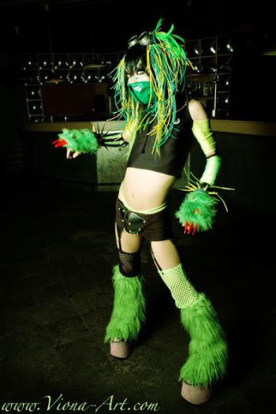
Индастриал (от англ. industrial — «промышленный») — музыкальное направление, отличающееся выраженной экспериментальностью и особой эстетикой механических и других промышленных звуков.
История:
Если заглянуть глубже в историю возникновения данного стиля, то можно узнать, что уже в 1913 году в труде композитора-футуриста Луиджи Руссоло «L’arte dei rumori» («Искусство шумов», «The Art Of Noises» — такое же название впоследствии взяла себе известная музыкальная группа) прослеживаются некоторые элементы идеологии современного индастриала. Также большой вклад в развитие идеологической основы внесли Эрик Сати, Пьер Шеффер и другие представители футуризма. Советский композитор Авраамов сыграл большую роль в развитии индастриала благодаря своему революционному по меркам 20-х годов ХХ века сочинению «Симфония гудков». Однако окончательно индастриал оформился в 1974 году в Англии. Этому способствовала группа Throbbing Gristle, основавшая лейбл Industrial Records, по названию которого и был назван стиль. Хотя есть другое расхожее мнение, что этим названием пионеры индастриала отделяли свою музыку от музыки прошлого, бывшей по их выражению «более аграрной» (намек на промышленно-индустриальную революцию в Англии XVII века). Изначально индастриал был не только музыкальным направлением, но и идеологическим (где основным методом стала т. н. «шоковая тактика»). В период с 1974 по 1981 год появляется множество музыкантов и групп этой направленности во всех частях света. Среди них наиболее известны Бойд Райс (NON), Einstürzende Neubauten, SPK, Merzbow и др. Они составили т. н. «классический индастриал». Но популярным направление так и не стало.
Throbbing Gristle распались в 1981 году, заявив о завершении «индустриальной» эпохи и начале «пост-индустриальной». Для музыкантов это означало смену тактики, произошёл переход от индастриала к пост-индастриалу. Бывшие участники Throbbing Gristle образовали несколько новых проектов, звучание которых сильно изменилось по сравнению с TG. Другие «классические» индустриальные группы (такие как SPK и Einstuerzende Neubauten) также перешли на «новую стратегию», появились и совершенно новые проекты. Пост-индустриальная музыка стала менее агрессивна, однако, вся та радикальность вылилась в музыкальные эксперименты и неслыханную изобретательность. Теперь пост-индастриал музыканты совмещают старый индустриальный подход с другими направлениями музыки: танцевальной, фольклорной, ритуальной.
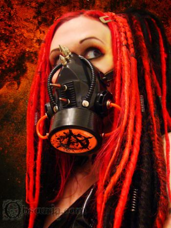
Электро-индастриал (англ. electro-industrial, также используется название электро (нем. Elektro (не путать с одноимённым поджанром танцевальной музыки)) — музыкальный жанр, возникший в 1980-х годах преимущественно в Канаде и странах Бенилюкса в результате взаимного влияния направления EBM и других жанров пост-индастриала и развивавшийся в конце 1980-х и первой половине 1990-х годов. Кроме прямоты музыкальных структур, унаследованных от EBM, и методов построения композиций, взятых из классического индастриала, электро-индастриал характерен наличием глубокого, многослойного и сложного звука. Первопроходцами в данном жанре считаются группы Skinny Puppy и Front Line Assembly. В 1990-х годах от жанра ответвились направления дарк-электро и аггротек. Фан-база данного жанра плотно связана с субкультурой кибер-готов.
После того, как движение EBM сошло на нет в начале 90-х годов, электро-индастриал наращивал темпы своей популярности на международной клубной сцене. В отличие от откровенно синтетического звучания EBM, электро-индустриальные группы используют более резкие по звучанию ударные и дисторшированный, искажённый, или даже искусственный вокал. В отличие от индастриал-рока и индастриал-метала, электро-индастриал-группы используют сравнительно немного гитарного звучания (если оно вообще присутствует). Для жанра характерна лирика с дистопическими мотивами.
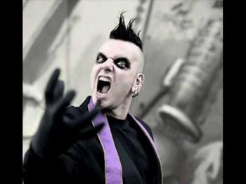
Agonoize — немецкая музыкальная группа, которую основали Mike Johnson, Oliver Senger и Chris L. в 2002 году.
Дискография:
• 2003: Paranoid Destruction EP (BLC Productions)
• 2004: Assimilation: Chapter One CD (BLC Productions)
• 2004: Open The Gate To Paradise EP (BLC Productions)
• 2005: 999 2CD (Out of Line Music)
• 2005: Evil Gets An Upgrade EP (Out of Line Music)
• 2006: Assimilation: Chapter Two (Out of Line Music)
• 2006: Ultraviolent Six EP (Out of Line Music)
• 2007: Sieben 2CD (Out of Line Music)
• 2008: For The Sick And Disturbed EP (Out of Line Music)
• 2009: Bis Das Blut Gefriert CDS (Out of Line Music)
• 2009: Hexakosioihexekontahexa 2 CD (Out of Line Music)
• 2009: Alarmstufe Rot CDM (Out of Line Music)
• 2012: Wahre Liebe EP (Out of Line Music)
• 2014: Apokalypse (Out of Line Music)
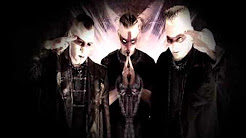
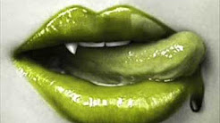
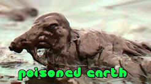
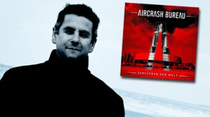
The EBM/Aggrepo band Aircrash Bureau, from Frankfurt (Germany), were: F. Schmidt (electronics), Stephan Klaus Kessler (voice & programming) & Michael Will (electronics & drums). The band was named after a favourite Gary Numan song.
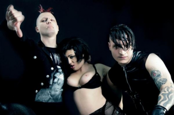
Alien Vampires — музыкальный коллектив из Италии, образованный в 1998 году и исполняющий свою музыку в направлениях Dark Electro, Power noise, techno. Проект известен своим антицензурным и антиморальным характером лирики и имиджа. После выпуска двух первых альбомов — Evil Generation (2005) и No One Here Gets Out Alive (2007) — проект заслужил популярность в среде любителей экстремальной электронной музыки.
• 2004 — I'm Dead Fuck You (сингл)
• 2005 — Evil Generation
• 2007 — Nuns are Pregnant (EP)
• 2007 — No One Here Gets Out Alive
• 2009 — Fuck Off and Die!
• 2010 — Harshlizer
• 2012 — Clubbers Die Younger (EP)
• 2014 — Harsh Drugs& BDSM (EP)
• 2015 — Drag You to Hell
Das Ich — немецкая группа, играющая в стилях darkwave, industrial, EBM electro-gothic. Название Das Ich заимствовано из работ основателя психоанализа Зигмунда Фрейда (например Freud, Sigmund (1923), Das Ich und das Es) и тесно связано с термином Эго. Основной мотив творчества группы — экспрессионистские стихи, наложенные на электронную музыку. На концертах музыканты широко используют театральные приёмы, декорации, грим.
История группы:
Штефан Акерманн и Бруно Крамм познакомились ещё в 1986 году на одной из дискотек провинциального баварского городка Байройт. Бруно с детства играл на фортепиано, а Штефан, по его словам, посещал курсы актеской игры, хотя с детства проявлял артистические способности. В 1987 они организовали электропанк проект Dying Moments, который не имел большого успеха.
Группа Das Ich появилась спустя два года, в 1989 году, хотя некоторые песни («Gottes Tod», «Sodom und Gomorrha», «Lugen und Das Ich»), принёсшие ей популярность, были задуманы ещё в 1988. Группа стала одним из основателей и основных участников движения начала девяностых «Neue Deutsche Todeskunst» (Новое немецкое искусство смерти).
Первый релиз группы имел провокационное название «Satanische Verse». Он вышел в 1990, вскоре после скандала с книгой «Сатанинские стихи» Салмана Рушди, за которую тот был приговорен к смерти в Иране. Первый LP группы «Die Propheten» вышел в Германии в 1991 на собственном лейбле Крамма Danse Macabre и был переиздан в США в 1997. Сквозная тема альбома — освобождение человека от религии.
Альбом 1994 «Staub» содержит более сложные, «симфонические» аранжировки при сохранении постиндустриальной основы музыки. С этого времени Крамм начинает широко использовать классические инструменты в своих аранжировках. Альбом 1995 года «Die Liebe» был записан совместно с дэт-метал-группой Atrocity и стал одним из первых примеров плодотворного сотрудничества между метал- и готик-коллективами.
Альбом «Egodram», изданный в 1997 на лейбле Edel Records, получился довольно танцевальным по звучанию, особенно в сравнении с ранним творчеством группы. В том же году Крамм покупает старинный замок, служивший тюрьмой в средние века, для своей студии и лейбла Danse Macabre.
В 1997—1998 группа работает над альбомом «Morgue» (Морг). Альбом создан на основе цикла стихотворений поэта-патологоанатома Готфрида Бенна (Gottfried Benn), «Morgue und andere Gedichte», написанного в 1912.
Альбом «Antichrist» вышел в 2001. Основная тема альбома — критический анализ современной мировой политики. В 2002—2006 группа выпускает два DVD и два альбома ремиксов. Das Ich, начиная с 1994, успешно гастролирует в США, а в 2006 приезжает также в Бразилию и Россию.
Альбом «Lava» был выпущен в 2004 году, в двух версиях — «Lava: Ashe» и «Lava: Glut». На одном из дисков были записаны традиционные версии песен, на втором — их же танцевальные ремиксы.
В 2006-ом Das Ich записали пластинку «Cabaret». После неё Крамм и Аккерманн выпустили только EP под названием «Kannibale».
6-го сентября 2010 года была закончена работа над абсолютно новым альбомом Das Ich — «Koma». Он представляет собой смесь культурных влияний Дальнего Востока, классики, электроники и экспрессионизма. Альбом был презентован в виде CD и Collectors Edition Box Set (строго ограниченный тиражом в 500 копий). Box Set, явно вдохновленный манга стилем, содержит CD, книгу-комикс, футболку, значок и наклейку от Danse Macabre.
В 2011 году вокалист Das Ich Штефан Аккерманн перенёс инсульт. Во все последующие туры группа в этом году ездила в изменённом составе: Бруно Крамм в роли основного вокалиста + приглашённые вокалисты.
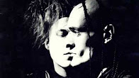
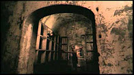
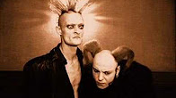
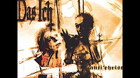
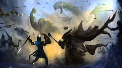
La Magra was founded by Louis Cyphre in 2001. Dark electronic sounds covered by dark vocals about death, love and immortality. The first releases were burned on CD-R’s and distributed to friends and people who liked this stuff.
The first release was called “Taste my blood” followed by the first full-time CD-R “Sounds of blasphemy”. The second full-time CD-R release was called “ Sinfonien des Grauens”. There was an apocalyptic theme performed. Few times later the third CD-R was released, called “ Troops of tomorrow”. After that, the CD-R releases were stopped.
In 2006 La Magra became a member of the “Rupal” record-label and started remix works for Wynardtage, Acylum, May-Fly & A7ie. In August ..06 it was time for the debut CD called “Music for the living dead”. The third Longplayer "Paradise Lost" was released in november 2009... This was the first Release wih Singer "Clodi". At May 2010 La Magra played their first Gig on the WGT-Frestival in Leipzig (GER) with this new Line Up.
Miss Construction is a Germany electronic music band from Berlin.
History:
Miss Construction was formed by singer Chris Pohl in 2008. Pohl had long used up all his resources for unleashing Electro-Industrial/Noise Project Tumor (Tumor is Dead). Miss Construction is seen as an emulation of Tumor, the new official succession from Chris Pohl. Needing a partner in crime, Chris turned to his fellow Terminal Choice collaborator Gordon M. The project is also slated to perform as a live band.
The first release was the new version of “Totes Fleisch”, a cover from Terminal Choice, followed by the debut album Kunstprodukt, released on 28 April 2008 by Out of Line sublabel Fear Section. The Project was debuted at WGT 2008 in Leipzig. In November 2013 the band released its second full-length album United Trash - The Z Files via Out of Line Music.
Discography, Albums:
• 2008: Kunstprodukt
• 2013: United Trash - The Z Files
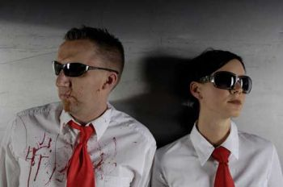
Suicide Commando — бельгийская музыкальная группа, стиль музыки которой сочетает в себе aggrotech с элементами электро-индастриала (Electro-industrial). Группа создана Йоханом ван Роем в 1986 году, выпустила первый альбом (Critical Stage) в 1994 году. Последний альбом, над которым работал Йохан, вышел 22 января 2010 года под названием Implements Of Hell.
Johan Van Roy, единственный член группы Suicide Commando, начал экспериментировать с музыкой в 1986. Несколько лет спустя он выпустил первую (из 9-ти) кассету под псевдонимом Suicide Commando и первую песню на виниловом сборнике «Electronic». Van Roy продолжил записываться и участвовать в различных компиляциях, таких как Rotation II и Induktion, Varianz und Deren Folgen, выпущенных Kugelblitz records.
Дискография, Студийные Альбомы:
• Critical Stage (1994)
• Stored Images (1995)
• Contamination (1996)
• Construct-Destruct (1998)
• Re-construction (1998)
• Chromdioxyde (1999)
• Mindstrip (2000)
• Anthology (2002)
• Axis of Evil (2003)
• Bind, Torture, Kill (2006)
• X20 (2007)
• Implements Of Hell (2010)
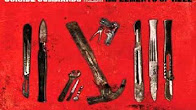
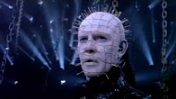
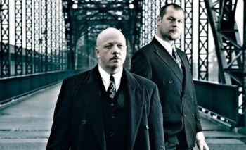
VNV Nation — музыкальная группа электронно-индустриальной сцены, основоположники направления futurepop. VNV в названии группы сокращение от англ. Victory Not Vengeance (с англ. — «победа, а не месть». Смысл этого девиза в том, что нужно стремиться к достижению своей цели, а не сидеть в горьком сожалении и тихо ненавидеть людей за то, что они делают что-то, чего тебе кажется, ты делать не можешь. Изначально группа называлась Nation, но Ронан Харрис почувствовал, что название может быть понято превратно, особенно на EBM-сцене (группа тогда играла на разогреве у Nitzer Ebb), и добавил «VNV».
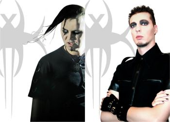
Xperiment is a Spanish Harsh Electro / Industrial band. Their sound is a mix of several music styles combined with a dark electro influence in order to give a new point of diversity into the scene. This touch bring a fresh and unique style in each new song.
The new album is called 'Visions Of Destruction'. Includes 11 new songs and a bonus CD with remixes from bands like Say Just Words, Antythesys, Decayed Reflection, Red-Line, Hydra Division V... a versus with X-Tropeaos band and the unreleased old song 'Desafío'.